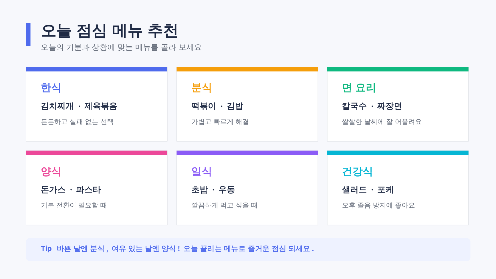
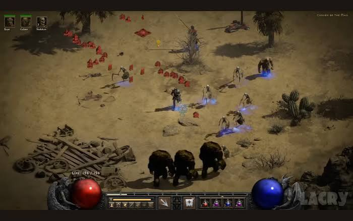
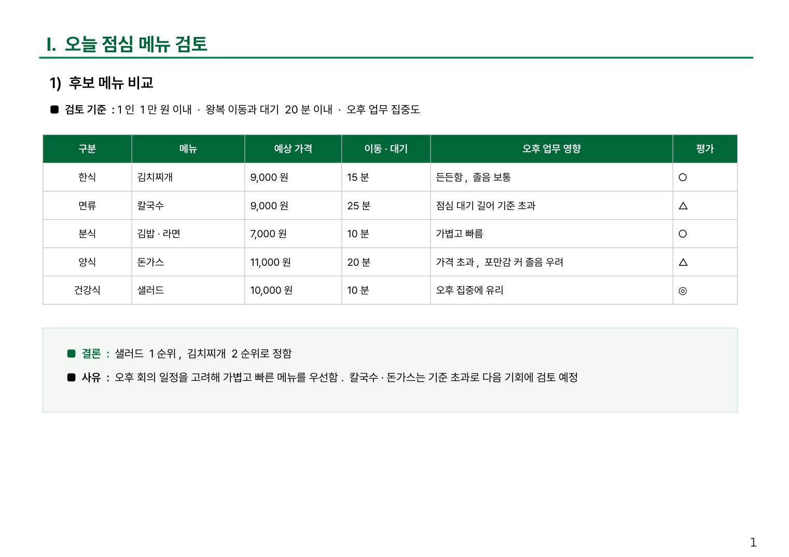

①
오픈북 시험 보는 학생
AI가 하는 일은 하나, 빈칸에 들어갈 다음 말 맞히기. 긴 답도 이걸 수백 번 이어 붙인 것입니다.
왜 안 돼? AI로 모든 게 가능하다
"가평, 춘천…
이건 나도 아는데?"
우리는 색다른 답을 기대했는데, 나온 건 누구나 아는 이야기입니다. 실망하셨다면, AI를 잘못 쓰고 계신 겁니다.
답은 예시 · 실제 답은 물을 때마다 조금씩 다릅니다
AI가 하는 일은 하나, 빈칸에 들어갈 다음 말 맞히기. 긴 답도 이걸 수백 번 이어 붙인 것입니다.
읽은 글 조각 15조 개+. 사람이 쉬지 않고 읽어도 약 48만 년. 반도체 한 장이 1초에 약 1,000조 번 계산합니다.
여행 글에 가장 많이 나온 곳이 가평 · 춘천. 그래서 뻔한 답이 나오는 게 정상입니다.
딱 맞는 답이 없으면 그럴듯하게 지어냅니다(환각). 판례 번호 · 금액이 제일 위험합니다.
Meta "The Llama 3 Herd of Models"(2024) · NVIDIA H100(BF16 989 TFLOPS) · 사람 비교는 강사 환산 · ③의 퍼센트는 설명용
원의 넓이 = π × r²
π = 원의 넓이 ÷ r²
π = 3.14159…
AI는 많은 사람이 쓴 답을 뽑는 기계입니다. 색다른 결과는 AI가 아니라 내 조건에서 나옵니다. 그러니 물어보지 말고, 내 조건을 주고 일을 시켜야 합니다.
많은 사람이 쓴 답을 뽑아 줍니다. 누가 물어도 같은 답입니다.
차로 1시간 반 이내, 북적이지 않는 곳, 숙소 15만 원 이하. 후보를 비교표로 만들고 1박 2일 동선까지 짜 달라고 합니다.
이제부턴 AI를 일을 시켜서 나를 돕는 도구로 써 봅시다.
원리는 알았습니다. 그런데 왜 하필 지금일까요?
점 하나가 회사의 대표 모델 하나입니다. ChatGPT 전 약 5년 동안 5개였던 점이, 이후 4년 사이 46개로 늘었습니다. 회사마다 몇 개월에 한 번씩 새 모델을 내고, 그 간격은 점점 짧아지고 있습니다. 그런데 이건 시작일 뿐입니다.
각 회사 공식 발표 기준 · 대표 모델만 골라 표시(연도별 수도 이 표 기준) · 2026년 10월 기준 · 점에 마우스를 올리면 이름과 출시 월
알파고 제로는 사람 기보 없이 혼자 배웠습니다
"나는 바둑계에 미래가 먼저 왔다고 생각한다."
장강명, 『먼저 온 미래』(2025)구글 딥마인드 · Silver 외, Nature(2017) · 장강명, 동아시아(2025)
세계 최상위 프로그래머들이 겨루는 대회 결승. 1년 전엔 사람이 근소하게 이겼습니다. 1년 뒤, AI는 모든 문제를 풀었습니다.
5문제 전부 해결 · 사람 참가자 전원을 앞섬 (칸 너비 = 배점)
AtCoder World Tour Finals 2025 · 2026(도쿄) · OpenAI는 시범 참가 · The Decoder, OfficeChai 보도
10년 넘게 진전이 없던 수학 문제 10개에서 AI가 새 결과를 냈습니다. 사람이 낸 시험 문제가 아니라, 답을 아무도 모르던 문제입니다.
OpenAI, "Ten advances in mathematics and theoretical computer science"(2026.8.1)
설명 없는 게임을 직접 해 보며 규칙을 알아내는 시험입니다. 사람에게는 쉽고 AI에게는 어렵게 일부러 만들었습니다.
ARC Prize · ARC-AGI-3(2026.3 공개) · 2026.9는 ARC 표준 평가 기준(GPT-6 Astra) · 언론 보도 종합
전문가 약 1,000명이 낸 2,500문항. 다른 시험을 다 풀어 버리자 만든 마지막 시험입니다. 공개 당시 최고 AI도 한 자릿수였습니다.
Humanity's Last Exam(CAIS · Scale AI) · 리더보드 기록 시점 기준 · 도구 사용 여부에 따라 출처마다 조금씩 다름
"지능의 비용은 결국 전기 요금 수준에 가까워질 것"
「The Gentle Singularity」 2025.6"AI는 전기만큼 필수입니다. 쓰는 것은 선택이 아닙니다"
G20 혁신장관회의 2026.9전등 켤 때 전기 요금을 따지지 않듯, AI도 그렇게 됩니다. 그때 AI를 쓸 줄 모르면, 전기를 안 쓰는 것과 같습니다.
그리고 AI가 흔해질수록, 쓰는 사람과 안 쓰는 사람의 차이는 벌어집니다.
강의안 50장, 보통 최소 1주일 → 이번엔 2일
아직은 6시간 남짓, 따라잡을 수 있는 차이입니다. 1주, 2년으로 벌어지기 전에, 지금 우리도 AI를 쓰기 시작해야 합니다. START NOW
AI 사용 여부에 따른 격차: 강연 자료 인용(METR 'AI가 혼자 해내는 일의 길이' 측정 기반) · 2026년 말 이후는 예측 · 막대는 로그 눈금
질문 문장을 잘 쓰는 요령
'프롬프트 엔지니어' 연봉 최대 33.5만 달러 채용 공고가 화제질문 한 줄보다 AI가 보는 자료 전체를 잘 채우기
쇼피파이 CEO 뤼트케 제안 · 카파시 동의AI가 일할 환경 전체를 깔아 두기
OpenAI "사람은 방향을 잡고, 에이전트가 실행한다"Fortune · Bloomberg(2023.3) · The Decoder(2025.6) · Anthropic(2025.9) · Mitchell Hashimoto(2026.2.5) · OpenAI 'Harness engineering'(2026.2.11)
힘은 세지만,
혼자서는 원하는 방향으로 안 갑니다
AI가 실수할 때마다, 다시 실수하지 않게 마구를 고쳐 둡니다. 오늘은 그 마구를 채우는 법을 배웁니다.
Mitchell Hashimoto, 'My AI Adoption Journey'(2026.2) · LangChain, 'The anatomy of an agent harness'(2026)
입력 · 어떻게 시킬까
산출 · 결과물을 어떻게 좋게
묶기 · 버튼 하나로 돌아가게
그래서 오늘은 프롬프트부터 시작합니다.
입력이 바뀌면, 결과가 바뀝니다
AI는 많이 나온 답을 뽑는다고 했죠. 조건 없이 물으면 모든 사람의 평균 답에서 뽑고, 내 조건을 넣을수록 뽑는 범위가 내 상황으로 좁혀집니다.
처음부터 조건을 다 갖춰서 한 번에 시킵니다.
대충 시작해서, 결과를 보며 하나씩 고쳐 갑니다.
신입에게 "이거 해 와"가 아니라 인수인계서를 주듯, 질문 한 줄이 아니라 AI가 볼 자료 전체를 설계합니다. 예시는 수리비 지연 민원 회신.
수리비 지연 민원 고객에게 보낼 회신 문자
10.9 견적 접수, 부품 단가 확인 중
민원 원문 · 통화 메모 (개인정보는 가리고)
책임 인정 표현 금지, 지급일 확정 약속 금지
문자 500자 이내, 존댓말, 기호 없이
지난번 잘 나간 회신 문자 붙이기
핵심은 재료와 기준입니다. 질문을 잘 쓰는 것보다, 무엇을 같이 넣느냐가 결과를 바꿉니다.
처음부터 조건을 다 갖춰서
한 번에 시킨다
대충 시작해서
보면서 고쳐 간다
우리는 어떤 걸 써야 할까요?
클릭하거나 → 키를 누르면 정답
# 판단 입장 당신은 보험사 소속 차량손해사정사의 시각으로 판단합니다. 손해사정의 목적은 불필요한 수리를 억제하고 투명하고 공정한 보험금을 지급하는 것이며, 동시에 소속 보험사의 지급 적정성(과잉·중복·무관 청구로 인한 누수 방지)을 필수로 고려합니다. 정당한 청구를 근거 없이 깎는 것도, 과도한 청구를 관행이라며 넘기는 것도 모두 잘못이며, 모든 삭감·조정 의견에는 사진 또는 기준상 근거를 붙입니다. 판단 우선순위는 (1) 수리 가능하면 교환보다 수리(PDR·복원·판금) 우선, (2) 청구 항목 간 중복·수량 과다 배제, (3) 이번 사고와 인과관계 없는 손상·작업 배제, (4) 회사 기준(최대인정시간·부수작업 기준 등)이 제공된 항목은 그 기준을 한도로 적용입니다. # 경미손상 판정기준 적용대상(이 목록에 있는 부품만 아래 1~3유형 분류를 적용하십시오. 그 외 부품에는 절대 이 분류를 적용하지 마십시오): 앞범퍼, 뒤범퍼, 후드,
K9(RJ) 650, 스팅어 570, 니로EV 650(히트펌프 1000), 쏘울 450(EV 600/650), 스토닉 450, 셀토스 450, 스포티지(QL) 550, 카니발(YP) 950 / 현대: 아이오닉EV 550(히트펌프 1100), [면책 판단] 자차손해에서 주정차 중 타이어·튜브에만 생긴 손해는 원칙 면책(다른 차와 충돌, 화재·산사태, 가해자 확정 사고 등은 보상 대상 예외) [업무처리] 기본옵션과 다른 타이어·휠 장착 시 부속품 담보 기재여부 확인. 제원(단면폭/
사람이 처음부터
한 번에 쓰기는 불가능
사람 머리로 단순하게 짠 프롬프트로는 결과물도 거기서 멈춥니다. 자유대화로 키우고, 컨텍스트로 굳힌다. 그래서 둘 다 써야 합니다.
실제 업무 도구 프롬프트(자동차 손해사정 AI 도구 · 개정안 v3) 앞·뒷부분 발췌
뭘 말해야 할지 모르겠다
특히 처음 쓰는 분
깨지고 고치는 만큼 시간이 든다
전문가도 마찬가지
나는 답만 하면 됩니다. 말할 건 세 가지: 목표 · 한 번에 하나씩 · 언제 멈출지.
White 외, "A Prompt Pattern Catalog to Enhance Prompt Engineering with ChatGPT"(2023) · Flipped Interaction 패턴
0에서 시작하지 않으니, 깨지고 고치는 횟수가 확 줄어듭니다.
Gemini Deep Research 무료 공개(2025.3.13, Android Authority) · OpenAI 도움말 'Deep research in ChatGPT'
역질문 · 벤치마킹으로 마음에 드는 결과가 나올 때까지
"다음엔 한 번에 이 결과가 나오게, 지금까지 대화를 요청문 하나로 정리해 줘"
Gemini 젬 만들기의 'Gemini로 지침 다시 쓰기' 버튼 · 무료 요금제도 가능
이렇게 굳힌 요청문을 파일로 저장해 두면, 그게 바로 스킬입니다. (챕터 2)
Google 도움말 'Gems 시작하기' · OpenAI 'GPT-5 prompting guide'(메타프롬프팅)
AI가 묻고, 나는 답한다
출발점을 높이고 다듬는다
바로 파고든다

그래서 이제, 결과물을 좋게 만드는 법을 배워 보겠습니다.

디아블로 II(블리자드) 캐릭터 선택 화면을 설명용으로 다시 그린 그림

마나 회복 속도 증가
한 번 찍어 두면 항상 켜져 있음 · 누를 필요 없음
화염 피해 · 폭발
버튼에 올려 두고 누르는 순간 발동
디아블로 II(블리자드) 스킬 구조를 설명용으로 다시 그린 그림
메모라이징과 스킬을 한번 알아보겠습니다
AI 모델 자체를 바꾸는 일
나의 습관 · 말투 · 업무를 적어 둔 메모
+ 대화를 시작할 때마다 먼저 읽고 시작
그래서 무엇을 기억시킬지 내가 정하고, 바뀌면 내가 고칩니다.
맞춤 지침 · 메모리
어디서나 똑같이 적용업무마다 캐릭터를 따로 키우듯, 프로젝트마다 전제조건과 자료를 넣어 두면 그 안의 결과물이 일관되게 나옵니다.
ChatGPT 프로젝트 · Claude 프로젝트 · Gemini 젬(Gem)
+ 과실 얘기가 나오면 이 파일을 근거로 답함
+ 이 프로젝트의 모든 대화에 적용
이 프로젝트는 자동차보험 대물 사고의 과실 검토용이다.
- 과실 비율 얘기가 나오면 과실도표.pdf 기준으로 답하고, 해당 도표 번호를 적어 줘.
- 도표에 없는 상황이면 추측하지 말고 [확인 필요]로 표시해 줘.
- 결과는 검토 보고 양식.docx 순서대로: 사고 개요 → 적용 도표 → 수정 요소 → 의견.
+ 이 프로젝트 모든 대화에 자동 적용
+ 같은 기준 · 같은 양식으로 결과물
지침도 AI가 씁니다
"나를 인터뷰해서 이 업무용 지침을 써줘"
name: complaint-reply
description: 자동차보험 민원에 회신 문자나 메일 초안을 쓸 때 사용
모든 대화에 늘 적용
그 일을 할 때 AI가 꺼내 그대로 따라 함 · 서식 파일까지
대화로 일을 한 번 끝까지 해 본다
"방금 한 걸 스킬로 만들어줘"
받은 파일을 스킬 메뉴에 올린다
챕터 1에서 굳힌 요청문이 그대로 스킬북이 됩니다.
Claude 스킬: 모든 요금제 · 설정에서 '코드 실행 및 파일 생성' 켜기 필요(Anthropic 도움말) · ChatGPT GPTs · Gemini 젬

스킬은 양식 만들기에만 쓰는 게 아닙니다. 반복되는 일이면 검사 · 점검 · 확인도 전부 스킬이 됩니다.
스킬이 몇 개로 늘어나도, "스킬북 소환" 한마디면 펼쳐 보고 맞는 걸 골라 줍니다.
| 반복한 일 | 횟수 | 스킬 후보 |
|---|---|---|
| 통화 메모 → 민원 회신 문자 | 8번 | 민원 회신 |
| 현장 사진 · 메모 → 보고서 | 5번 | 입회 보고 |
| 처리 현황 → 주간 보고 | 4번 | 주간 보고 |
프로젝트 안에서 새 채팅 하나 켜고 물어보면, 내 업무 기록에서 스킬 후보를 골라 줍니다.
지난 대화 참조 기능이 켜져 있어야 함 · Claude '채팅 검색 및 참조' · ChatGPT '채팅 기록 참조'(요금제별 상이)
AI는 몇 개월마다 새 모델이 나올 만큼 빠릅니다. 혼자서는 못 따라갑니다.
그래야 속도를 따라잡고, 새로운 아이디어가 나옵니다.
4단계로 내 작업장을 완성합니다
이름: 분쟁심의답변서생성기
환경설정만 가볍게
기준 · 양식 · 잘 쓴 예시
업무 규칙은 여기에 · "분심 답변서 만들어줘"
업무 규칙(문체 · 상대 주장 · 도표 번호)은 여기 말고 STEP 4 스킬에 넣습니다. 지침은 늘 켜진 환경설정이에요.
처음부터 규칙을 다 쓰지 않아도 됩니다. 동료한테 말하듯 시작하세요.
구성안을 내고 묻는다 · 약도는? 디자인 톤은? 주장은 누가 써?
"목차 넣고, 청구 쪽인지 표시해. 법 근거도 넣어. 일단 디자인부터 뽑아 봐"
"내가 쓸 게 너무 많아. 개인정보는 빼, 어차피 입력칸에 있어"
"상대 주장은 내가 쓴 것만. 지어내면 사기야"
"'요청함'은 건방져 보여. '요청드립니다'로"
"이제 스킬로 만들자. 고르고 엔터 치면 뭘 넣을지 먼저 알려 줘"
받은 파일을 스킬 메뉴에 올리고 켜기
"분심 답변서 만들어줘"
사진 · 메모 틀이 먼저 나오면 완성. 틀린 곳은 "스킬에 반영해 줘"
이걸 계속 키우면, 사진과 메모만 넣어도 약도 · 쟁점 대비표 · 법적 근거 · 결론까지 갖춘 답변서가 나옵니다.
Claude 스킬: 설정에서 '코드 실행 및 파일 생성' 켜기 필요(Anthropic 도움말) · 메뉴 이름은 서비스 · 업데이트에 따라 다를 수 있음
오늘부터는 쓰면서 레벨업. 틀린 곳이 나오면 스킬에 한 줄씩 반영하면 됩니다.
그건 안 되나요?
바이브코딩 · 말로 프로그램 만들기
Alphabet 실적 발표(2024.10) · The Decoder(2026.4) · CNBC(2025.3) · Fortune · DemandSage(러버블) · Collins Dictionary(2025.11)
그래서 가이드라인이 필요합니다. 알고 하는 것과 그냥 하는 것은 차이가 큽니다.
개성 정하기
화면 · 구조
후보 받기
오류 찾기
샘플로 확인
세부 작동 다듬기
캡처로
점검 요청
특히 ① 목표와 ② 뼈대가 정말 중요합니다.
"그냥 만들어 줘" → 처음 나온 결과물이 AI의 선입관이 됩니다.
그 뒤로 수정 · 수정 · 수정해도 처음 틀을 못 벗어납니다.
"B의 색에
A의 카드 배치로"
AI는 내 편 들기 습성이 있어서, 그냥 물으면 "좋은 설계예요"부터 나옵니다.
설계에서 고치면 5분, 다 만든 뒤에 고치면 처음부터.
완성품이 아니라 맛보기라고 명시
샘플 데이터로 채워서 보여 달라고
틀어졌으면 설계로 돌아가기. 지금이 제일 싸게 고치는 때
대화가 길어지면 설계서를 정리해 새 채팅에서 이어 가세요. 선입관 없이 다시 시작합니다.
화면을 캡처해 붙이고, 한 번에 하나만.
"왜 안 돼? 다시 해"
여기까지가 바이브코딩 기초입니다.
시작: 깃허브 계정 → 저장소 만들기(비공개) → AI 서비스에서 깃허브 연결 · 회사 보안 정책 먼저
고칠 때마다 저장했기 때문에, 언제든 그 시점으로 되돌릴 수 있습니다.
가이드 순서 그대로 만들어 봅니다
HTML 파일 하나 · 내 폰에 저장
프론트엔드 + 백엔드(서버) + 데이터베이스
동그라미를 눌러 완료해 보세요
아래 탭을 눌러 화면을 바꿔 보세요
막히면 AI에게 물으면 길을 알려 줍니다. 오늘 아침 설문도 이렇게 만든 사이트예요.
교육용 공간이에요. 실제 고객 이름 · 연락처 · 주민번호는 넣지 마세요.
AI에 입력한 내용은 서비스 회사의 서버로 갑니다. 개인 요금제는 설정에 따라 AI 학습에 쓰일 수도 있습니다. 편리함보다 먼저 챙겨야 할 네 가지입니다.
회사 보안 정책이 언제나 먼저입니다.
Do Everything!